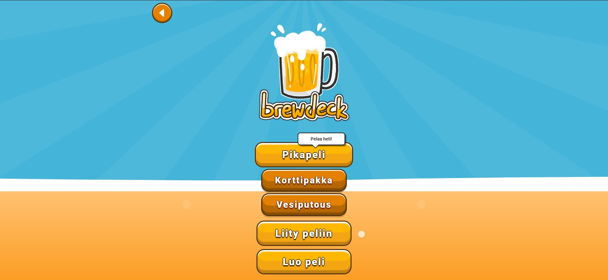

Aku Järvinen
Ticorporate
Mikä on Ticorporate?
Ticorporate on Jamkin liiketoimintasimulaatioympäristö, jossa opiskelijat suunnittelevat ja kehittävät omia sovelluksia ja pelejä. Ympäristö on rakennettu mahdollisimman todentuntuiseksi ja tästä syystä esimerkiksi opiskelijoiden käyttämät teknologiat ovat samoja kuin työelämässä. Ticorporaten aikana opiskelijat oppivat mm. hyödyntämään ketterän kehityksen periaatetta ja ratkomaan ohjelmistokehityksen ongelmia. Projekteja opiskelijat tuottavat omissa ryhmissään
Meidän Projekti
Brewdeck
Brewdeck on Ticorporaten aikana kehitetty sovellus, jonka avulla voit pelata juomapelejä suoraan selaimestasi kavereidesi kanssa. Sovellus rakennettiin Angularilla ja käyttäen Amazon Web Servicesin palveluita.
Mitä tein?
Tavoitteet ja lähtökohdat
Minun tavoitteeni Ticorporaten aikana oli saada syvempää ymmärrystä ja käytännön kokemusta AWS:stä ja full stack sovelluskehityksestä, koska minulla oli aluksi rajallinen tietämys näistä teknologioista. Halusin myös ticorporaten aikana saada lisää itsevarmuutta edessä kummittelevaan työharjoitteluun.
Koska oma ja tiimin tietämys Angularista ja backendistä oli rajallinen, vietimme projektin alussa paljon aikaa näiden teknologioiden opiskeluun.
Backend
Halusimme rakentaa backendin pilveen, koska serverless arkkitehtuuri kiinnosti meitä ja tämä oli hyvä mahdollisuus tutustua tähän. Saimme myös koululta krediittejä AWS:lle. Mutta yritimme pysyä silti free tierin rajoissa.
Amplify
Projektin alussa otin tehtäväkseni rakentaa meidän ensimmäisen version backendin. Koska halusimme rakentaa backendin pilveen, valitsin tähän työkaluksi AWS Amplifyn.
Amplify on AWS:n palvelu, joka mahdollistaa sovelluksen backendin rakentamisen pilveen nopeasti ja helposti. Amplify tarjoaa myös paljon valmiita työkaluja, kuten tietokannan ja palvelimen hallinnan.
Amplifyn avulla pystyin rakentamaan backendin, joka tarjoaa REST API:n, jota frontend voi käyttää. Amplifyn avulla pystyin myös luomaan tietokannan, johon tallennetaan sovelluksen käyttämät tiedot.
Ongelmitta ei kuitenkaan selvitty. Tämä johtui siitä koska Amplify oli itselle uusi työkalu ja sen luomaa koodia oli aluksi vaikea ymmärtää ja soveltaa omaan projektiin. Backendi piti myös pystyttää muutamaan kertaan uudelleen. Onneksi Amplify tarjoaa hyvän dokumentaation, joka auttoi ongelmien ratkaisemisessa.
Koska tämä oli ensimmäinen kerta kun olin tälläistä tehnyt, tuli paljon uusia asioita vastaan. Tämä oli hyvä asia, koska se opetti minulle mm. kuinka Rest API toimii, ja että kuinka uusia asioita voi itse opiskella. Uuden oppimisen taito varsinkin on hyvä osata tulevaisuuden työelämässä.
Websocket
Projektissa käytettiin myös websocketteja. Websocketit ovat yleensä käytössä silloin, kun halutaan luoda reaaliaikainen yhteys serverin ja clientin välille.
En päässyt itse websockettien kanssa backendissä paljon tekemään, koska se oli enimmäkseen toisen tiimiläisen vastuulla. Pyrin kuitenkin auttamaan niiden kanssa sen minkä pystyin, ja pääsin myös tekemään pari websocket lambda funktiota.
const AWS = require("aws-sdk");
const awsServerlessExpressMiddleware = require("aws-serverless-express/middleware");
const bodyParser = require("body-parser");
const express = require("express");
AWS.config.update({ region: process.env.TABLE_REGION });
const dynamodb = new AWS.DynamoDB.DocumentClient();
let tableName = "brewdeckDb";
if (process.env.ENV && process.env.ENV !== "NONE") {
tableName = tableName + "-" + process.env.ENV;
}
const userIdPresent = false; // TODO: update in case is required to use that definition
const partitionKeyName = "id";
const partitionKeyType = "N";
const sortKeyName = "";
const sortKeyType = "";
const hasSortKey = sortKeyName !== "";
const path = "/cards";
const UNAUTH = "UNAUTH";
const hashKeyPath = "/:" + partitionKeyName;
const sortKeyPath = hasSortKey ? "/:" + sortKeyName : "";
// declare a new express app
const app = express();
app.use(bodyParser.json());
app.use(awsServerlessExpressMiddleware.eventContext());
// Enable CORS for all methods
app.use(function (req, res, next) {
res.header("Access-Control-Allow-Origin", "*");
res.header("Access-Control-Allow-Headers", "*");
next();
});
app.get(path, function (req, res) {
let queryParams = {
TableName: tableName,
Limit: 1000,
};
dynamodb.scan(queryParams, (err, data) => {
if (err) {
res.statusCode = 500;
res.json({ error: "Could not load items: " + err });
} else {
res.json(data.Items);
}
});
});
import { Component, OnInit } from '@angular/core';
import { Card } from 'src/app/game-table/game-shareable/card';
import { RULES } from 'src/app/game-table/game-shareable/mock-rules';
import { API } from 'aws-amplify';
import { Type } from '@angular/compiler';
import { WebsocketService } from 'src/app/services/websocket.service';
@Component({
selector: 'app-deck',
templateUrl: './deck.component.html',
styleUrls: ['./deck.component.css'],
})
export class DeckComponent implements OnInit {
isOver = false; // Tells when the game is over
//cards = CARDS;
//rules = RULES;
cardCount = 0; // How many cards have been played
curRule = '';
shuffledCards: any[] = []; // Shuffled cards
playedCards: any[] = []; // Played cards
params = {
// OPTIONAL
headers: {}, // OPTIONAL
response: true, // OPTIONAL (return the entire Axios response object instead of only response.data)
queryStringParameters: {}, // OPTIONAL
};
constructor(public wsService: WebsocketService) {}
ngOnInit(): void {
this.getCards();
}
loading = true;
// Fisher-Yates shuffle algorithm
shuffle(cards: Card[]) {
for (let i = cards.length - 1; i > 0; i--) {
const j = Math.floor(Math.random() * (i + 1));
[cards[i], cards[j]] = [cards[j], cards[i]];
}
return cards;
} // https://stackoverflow.com/questions/2450954/how-to-randomize-shuffle-a-javascript-array
// This function gets cards from the API and pushes them to an empty array on initialization
getCards() {
API.get('brewdeckApi', '/cards', this.params)
.then((response) => {
//console.log(response.data);
this.shuffledCards.push(response.data);
this.shuffle(this.shuffledCards[0]); // Shuffles the cards when the app is started
this.loading = false;
})
.catch((error) => {
console.log(error.response);
});
}
//function that get's and returns a list of players from wanted lobby
async function getPlayersList (event) {
const lobbyCode = event.lobbyCode;
const connectionId = JSON.stringify(event.connId);
const getParams = {
TableName: "ActiveLobbies",
Key: {
"id": lobbyCode
}
};
//create empty array
let playerList = [];
const value = await ddb.get(getParams).promise();
const returnValue = value.Item.players;
//push player names in to the empty array from return value
for(let i = 0; i < returnValue.length; i++){
playerList.push(returnValue[i].pname);
console.log(playerList);
console.log(returnValue[i].pname);
}
try {
console.log(playerList);
return playerList;
} catch (e) {
console.error("Error", e);
return { statusCode: 500, body: "Action Failed" + JSON.stringify(e) };
}
}
Frontend
Frontendissä sain tehtäväkseni tehdä pelin lobbyn. Tämä tarkoitti, että piti tehdä sivu, jossa peliin liittyvät pelaajat näkyvät ja kun host aloittaa pelin, niin kaikki pelaajat siirtyvät pelisivulle. Tämä tehtiin käyttämällä Angularin RxJS kirjastoa.
Haasteena tässä oli kokemattomuus Angularin kanssa. En ollut aiemmin tehnyt mitään vastaavaa, joten tämä oli minulle uutta. Siksi myös koodi on hieman sekavaa. Tämä on myös ensimmäinen kerta, kun olen tehnyt mitään reaaliaikaisuuteen liittyvää. Tätä tehdessä alkoi tulla selväksi että miten websocketit meidän projektissa toimivat.
Vaikka sain lobbyn toimimaan, niin en saanut sitä toimimaan ehkä niin kuin olisin halunnut. Tätä vaikeutti aikataulu, joka oli tiukka. Tätä oli silti mukava tehdä, koska se oli uutta ja opettavaista. Angular frameworkkinä ei pelota minua enää niin paljon kuin ennen.
import { Component, OnInit, OnDestroy } from '@angular/core';
import { WebsocketService } from '../services/websocket.service';
import { LobbycodeService } from '../services/lobbycode.service';
import { interval } from 'rxjs';
import { Router } from '@angular/router';
@Component({
selector: 'app-game-lobby',
templateUrl: './game-lobby.component.html',
styleUrls: ['./game-lobby.component.css'],
})
export class GameLobbyComponent implements OnInit, OnDestroy {
constructor(public wsService: WebsocketService, public lcservice: LobbycodeService, private router: Router) {}
players: any;
lobbyCode = '';
messageFromServer: any;
interval: any;
isHost = this.lcservice.isHost;
lobbycode = this.lcservice.lobbycode;
gameStatus: any;
ngOnInit(): void {
this.lobbyCode = this.lcservice.lobbycode;
this.wsService.messages$.subscribe(
(x) => {
// console.log(x);
//@ts-ignore
this.messageFromServer = x;
console.log(this.messageFromServer);
},
(err) => {
console.error('something wrong occurred: ' + err);
}
);
this.getLobbyPlayers();
setTimeout(() => {
this.insertData();
}, 5000);
//this.getLobbyPlayers(this.lobbyCode);
}
ngOnDestroy(): void {
clearInterval(this.interval);
}
gamebegining() {
clearInterval(this.interval);
this.wsService.sendToServer({
action: 'admin',
data: { path: 'updateGameState', lobbyCode: this.lobbycode, turn: '', deck: '', gamestatus: 'ingame' },
});
}
getLobbyPlayers() {
//execute every 2 seconds
this.interval = setInterval(() => {
this.wsService.sendToServer({
action: 'admin',
data: { path: 'getAllData', lobbyCode: this.lobbyCode, name: '' },
});
this.players = this.messageFromServer.players;
this.gameStatus = this.messageFromServer.gamestatus;
//If gamestatus is ingame, then stop interval and redirect to game page
if (this.gameStatus == 'ingame') {
//redirect to game page
this.router.navigate(['/GameOne']);
clearInterval(this.interval);
}
}, 2000);
}
AWS
Olin meidän tiimin AWS-ukkeli. Tämä tarkoitti käytännössä sitä, että olin vastuussa meidän tiimin AWS-tilistä. Tässä oppi paljon AWS-palveluista ja niiden käytöstä. Esimerkkeinä S3, IAM ja Cloudwatch. AWS-palvelut ovat hyvin monipuolisia ja niitä on todella paljon. Onneksi myös AWS omaa hyvän dokumentaation, joka auttoi paljon, ja netti on tutoriaaleja täynnä.
Aluksi piti tiimiläisille luoda IAM-roolit, jotta he pääsisivät käyttämään AWS-palveluita. Tämä tehtiin AWS IAM -palvelussa. Halusin kokeilun vuoksi myös luoda policyn, joka pakottaa kasivaiheisen tunnistautumisen.
Kun joku tiimin jäsen tarvitsi pääsyn AWS-palveluihin, oli minun homma antaa hänelle pääsy hänen tarvitsemaansa palveluun.
Tässä esimerkki siitä, kun meidän piti päästä käsiksi cloudwatch logehin silloin kun ilmeni ongelmia websockettien kanssa. Tässä käytettiin Cloudwatch-palvelua. Cloudwatch on hyvä palvelu, jolla voi seurata AWS-palvelujen toimintaa. Tässä taas tuli huomattua AWS-palvelujen monipuolisuus.
Koska frontissa piti käyttää kuvissa url osoitteita, niin päätimme luikauttaa kuvat AWS S3 -palveluun. S3 on helppokäyttöinen ja tuttu palvelu sekä turvallinen.
Minun vastuulla oli myös sovelluksen hostaus ja domainin hankinta. Vaikka vaihtoehtoja hostaukseen oli monta, niin valitsin lopulta AWS Amplify -palvelun. Domainin hankinta tehtiin AWS Route 53 -palvelussa. Domainin hankita ja liittäminen Amplifyyn oli helppoa.
Testaus
Tekniikan lisäksi minun sivurooli tiimissä oli testaus. Aluksi meidän näkemys oli, että kaikki ryhmän tekniset jäsenet tekevät yksikkötestausta ja end to end -testit suoritetaan Cypressillä aina kun uusi feature saadaan valmiiksi.
Lähtökohdat kaikilla oli testauksen kurssilta saatu osaaminen. Teimme yksikkötestauksen manuaalisesti varmistaaksemme komponenttien toiminnan. Emme käyttäneet mitään erityistä frameworkkia tähän prosessiin. Aina kun havaitsimme bugeja testauksen aikana, tunnistimme ja korjasimme ne välittömästi. Aikataulun vuoksi emme voineet varata testaukseen niin paljon aikaa kuin olisimme halunneet. Tämän seurauksena testaus, jonka pystyimme tekemään, oli vähäistä mutta siitä testauksesta mitä teimme oli hyötyä.
Harmiksemme testauksesta jäi uupumaan käyttäjätestaus, koska projektin alusta asti halusimme, että sovellus olisi mahdollisimman helppo ottaa käyttöön, ja että se olisi mahdollisimman saavutettava. Viimeiset käyttäjätestit tehtiin Ticorporaten päätösbileissä.
Loppu
Loppusanat
Ticorporate oli minulle hyödyllinen kokemus. Olen oppinut uusia asioita itsestäni ja saanut osaamista mikä on varmasti hyödyksi tulevaisuudessa. Vaikka projektin aikana tuli vastaan monia haasteita, niin tuli myös onnistumisia, jotka antoivat minulle motivaatiota jatkaa eteenpäin ja kehittää omaa osaamista ja jopa aloittaa omia vapaa-ajan projekteja.
Ticorporaten ansiosta sain myös selkeyttä tulevaisuuden suunnitelmiin ja työharjoitteluun. Esimerkiksi AWS:n kanssa työskentely on jo aikaisemmin ollut mielenkiintoista mutta nyt kun taas pääsin työskentelemään sen parissa niin se varmasti jatkossakin kiinnostaa minua. Sekä myös frontin ja backendin kanssa työskentely on ollut mielenkiintoista ja haluaisin tehdä sitä lisää tulevaisuudessa.